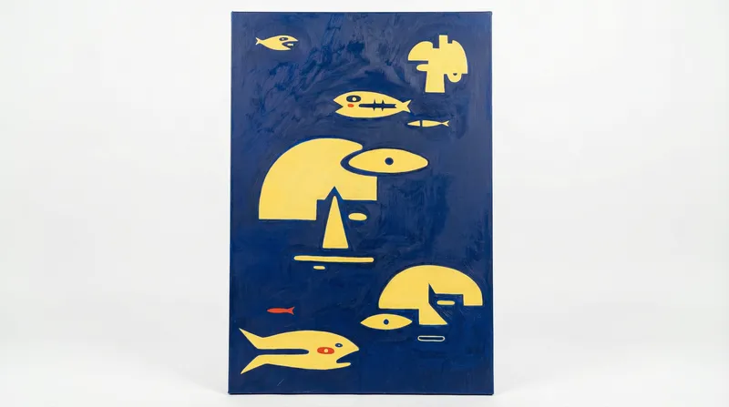
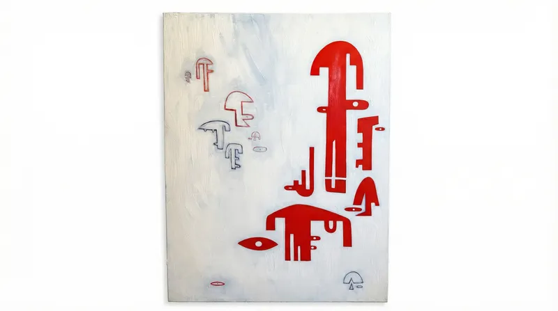
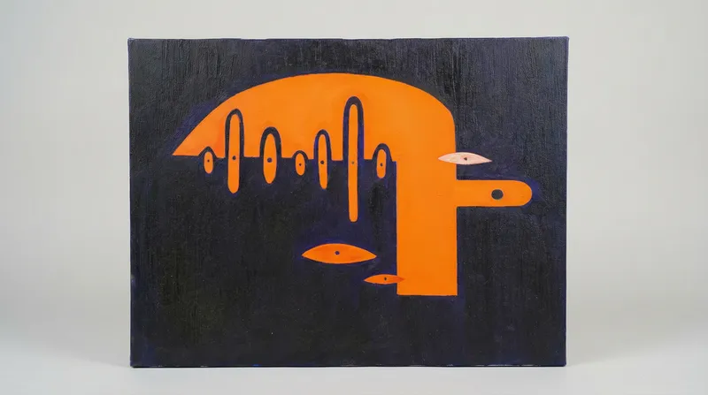
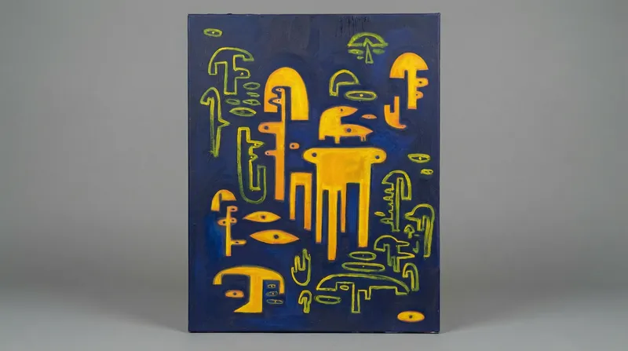
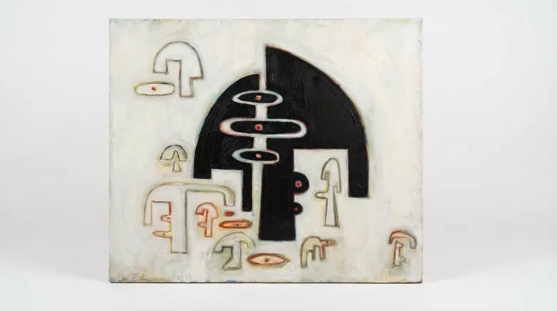
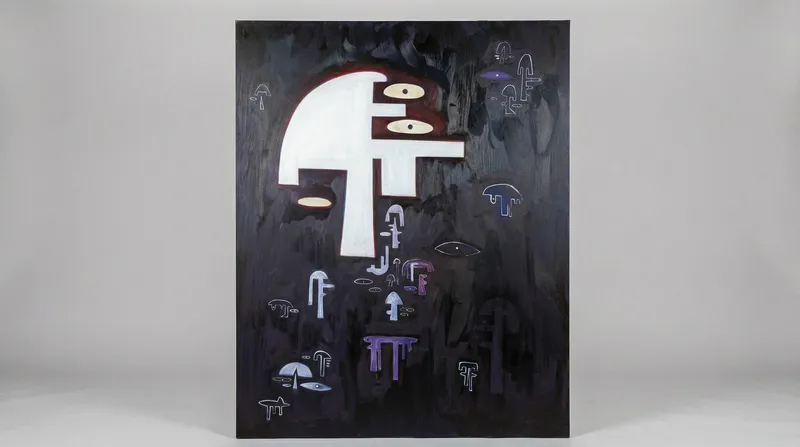
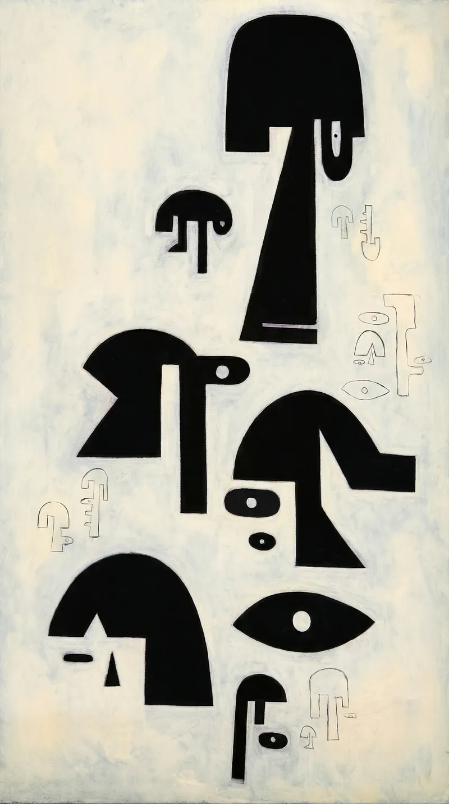

The World That Shapes The Work
Four worlds — ancient and modern, indigenous and urban, East and West — converging on canvas and clay.
Jo's work doesn't begin with a blank canvas. It begins with a lifetime of accumulated worlds: totem poles rising from Pacific fog, the clean geometric optimism of mid-century rooms, the 1,000-year weight of Jingdezhen kilns, and the raw, unfiltered power of Chicano murals painted beneath freeway bridges in Barrio Logan. Every face Jo renders carries all four of these worlds inside it.
I — Origin
Growing up in Washington State, Jo was immersed in the totem poles, ceremonial masks, and organic face carvings of Pacific Northwest Native American culture. The totemic tradition of stacking faces, reading meaning through form, and finding humanity in simplified silhouette runs deep in everything Jo paints. These are not borrowed aesthetics — they are the first visual language she ever learned.
II — Form
Jo's stepmother, an interior designer specializing in Mid-Century Modern, filled their home with the clean lines, organic curves, and functional elegance of the 1950s and 60s. Jonathan Adler's bold patterns. Eames silhouettes. The idea that beauty and utility could coexist without ornament. This is where Jo learned to trust the power of form alone — and where her signature simplicity was born.
III — Clay
Drawn to clay as a medium of raw honesty, Jo traveled to Jingdezhen, China — the porcelain capital of the world for over a millennium. The ancient tradition of blue-and-white ware, the tactile memory embedded in fired clay, the way a vessel can hold both utility and soul — all of this shaped Jo's approach to ceramics. At the 2024 Taoxichuan Spring Art Fair, her work sold out on the first day.
Colors drawn from earth, sky, fire & clay
Where all four worlds meet — the collection







Follow Jo's ongoing collection of visual inspirations — Mid-Century Modern interiors, textiles, ceramics, indigenous art, and the color-soaked world that feeds her practice.
Follow on Pinterest